Brands and chains
Companies with many locations have one brand page with all their branches, news and reviews. Brands choose their own colours, tabs and modules: see how a brand page is made.
 Bereke ✓Supermarket chain
Bereke ✓Supermarket chain NurGaz ✓Filling stations
NurGaz ✓Filling stations Jıldız Market ✓Supermarket chain
Jıldız Market ✓Supermarket chain Shıpa Dariykana ✓Pharmacy chain
Shıpa Dariykana ✓Pharmacy chain Ak Bata Bank ✓Bank
Ak Bata Bank ✓Bank Chuy Commercial Bank ✓Bank
Chuy Commercial Bank ✓Bank Dostyk ✓Filling stations
Dostyk ✓Filling stations Talasbank ✓Bank
Talasbank ✓Bank Signal ✓Phones and electronics
Signal ✓Phones and electronics Kepil ✓Pawnshops and exchange
Kepil ✓Pawnshops and exchange Kaimak ✓Cake shops
Kaimak ✓Cake shops Mattai ✓Grocery chain
Mattai ✓Grocery chain Steppe Luxury Group ✓Luxury retail
Steppe Luxury Group ✓Luxury retail Baitik Kurulush ✓Building supplies
Baitik Kurulush ✓Building supplies Künbala ✓Private kindergartensKIKFC Irad ✓Fast food
Künbala ✓Private kindergartensKIKFC Irad ✓Fast food Eskulap ✓Private clinics
Eskulap ✓Private clinics Zhol Mobile ✓Mobile operator
Zhol Mobile ✓Mobile operator Talas Seyahat ✓Intercity coaches
Talas Seyahat ✓Intercity coaches Tamga Print ✓Print and sign shop
Tamga Print ✓Print and sign shop Kervan Elektrik ✓Electricity networks
Kervan Elektrik ✓Electricity networks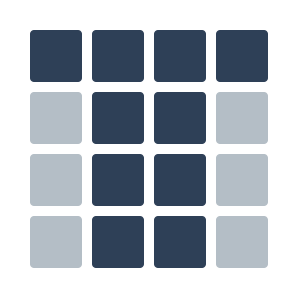
TCDG ✓Property and hotels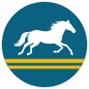
Irad Pochtasy ✓State postal enterprise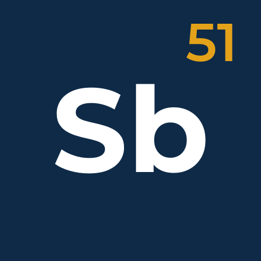
IARMC ✓Mining and metals Attelkom ✓Telecoms and internet
Attelkom ✓Telecoms and internet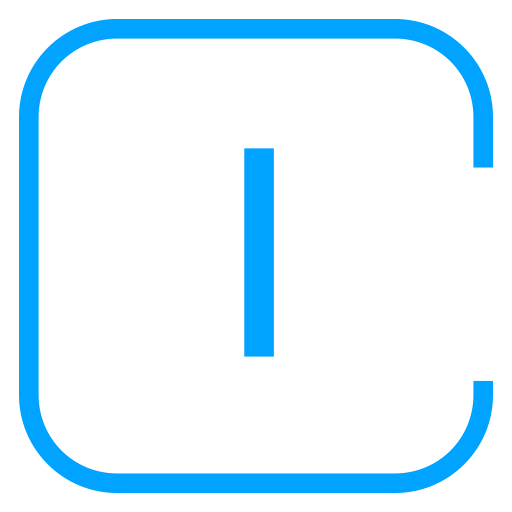
IradOne ✓News and portal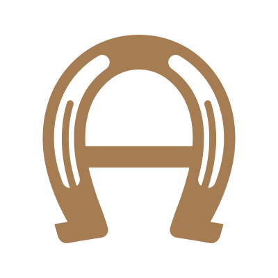
Akyel Syndicate ✓Horse breeding and transport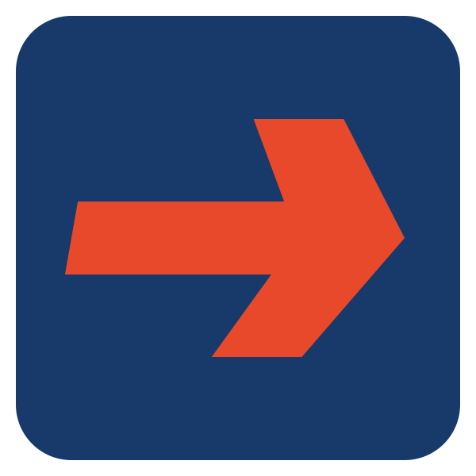
Trans-Chuy ✓Freight and logistics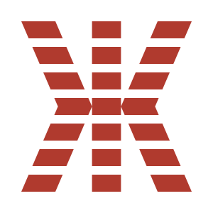
Zhetysu Textiles ✓Textiles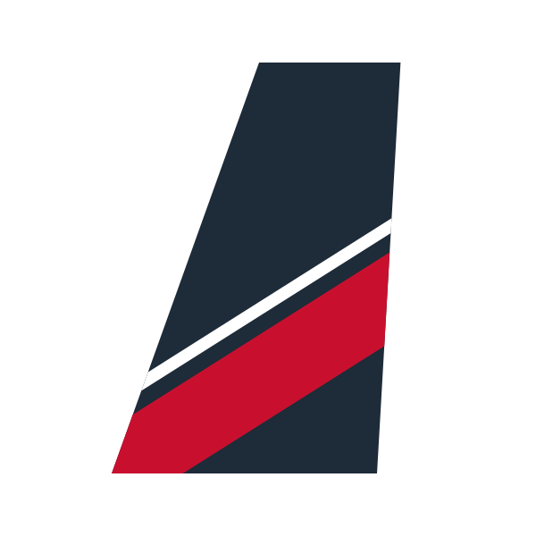
Iradiya ✓Air charter and cargo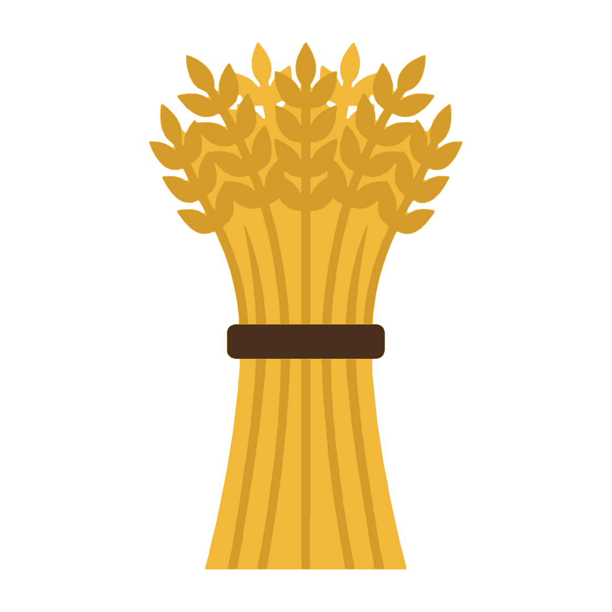
Nurzhan Agro-Industrial ✓Feed and grainJılmay ✓Online classifieds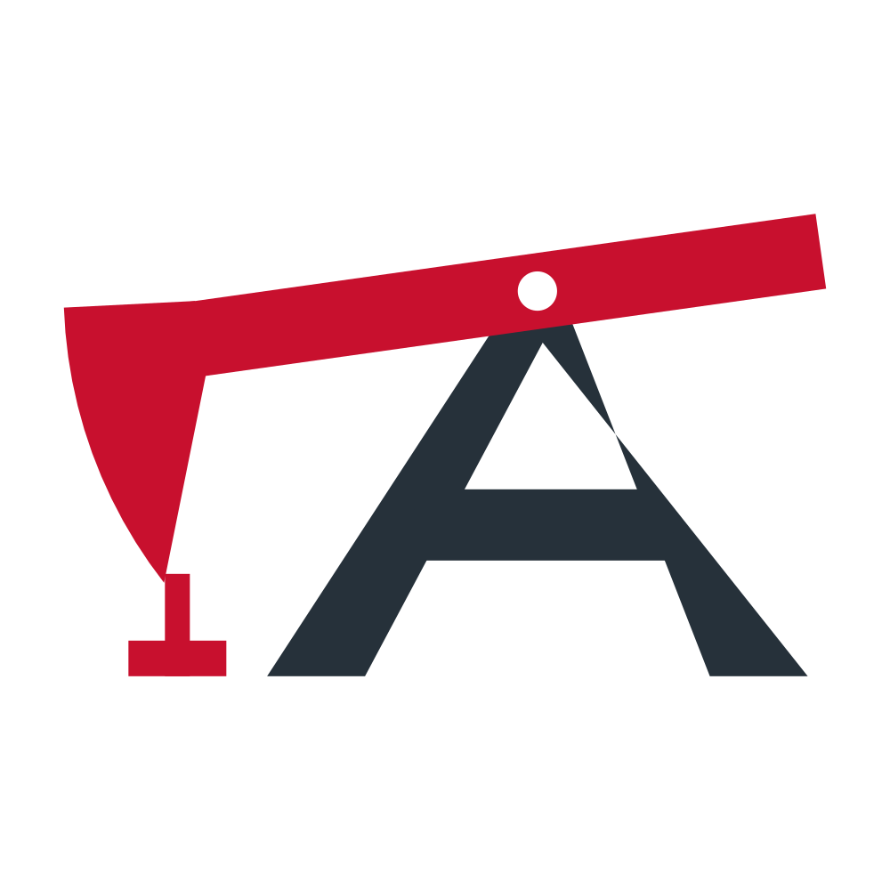
Nurzhanmash ✓Machine building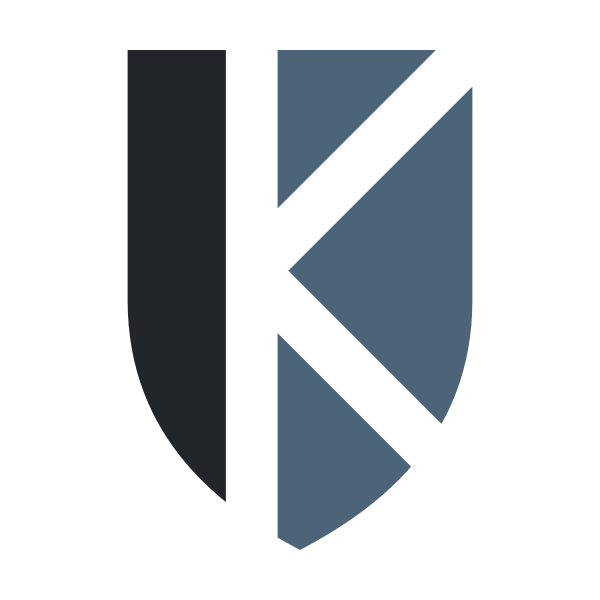
Kalkan ✓Security services Talas Süt ✓Dairy
Talas Süt ✓Dairy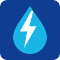
Iradenergo ✓State power company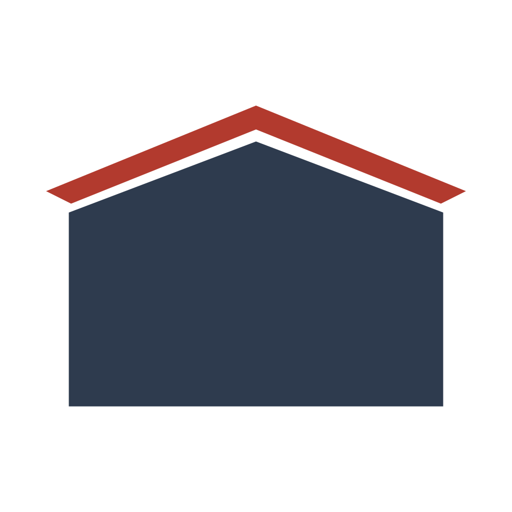
Iradstrakh ✓State insurance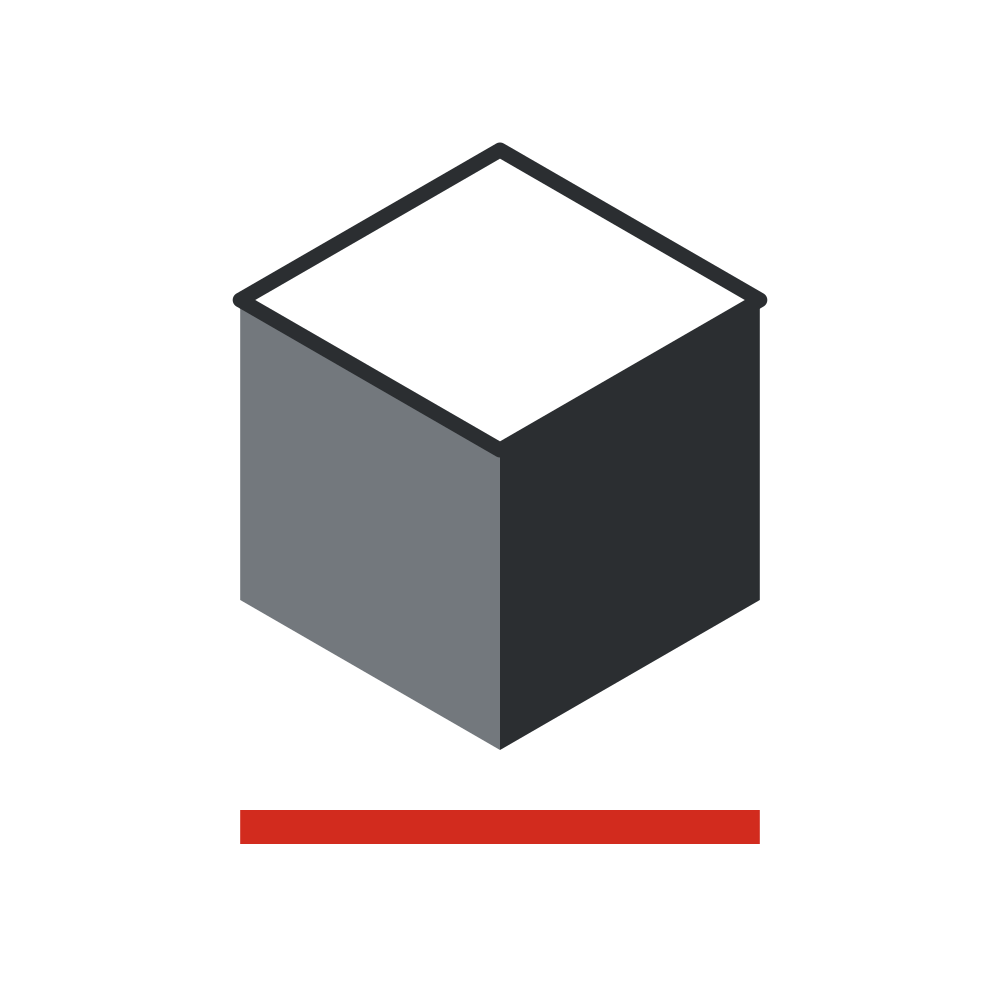
Ak-Kyr Cement ✓Cement worksNurzhandorstroy ✓Road constructionTorgoy ✓Mobile operator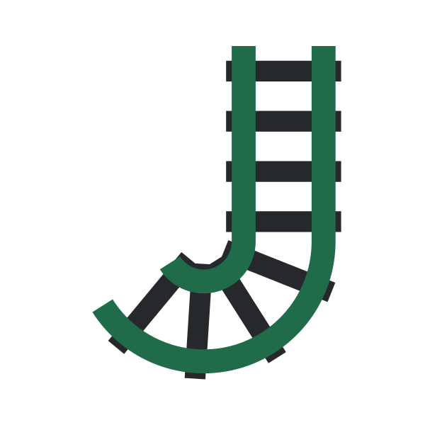
Irad Temir Jolu ✓State railway Tulpar ✓Messenger and payments
Tulpar ✓Messenger and payments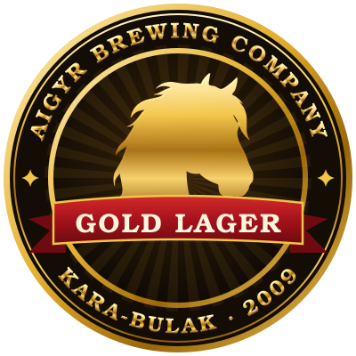
Aigyr Lager ✓Brewery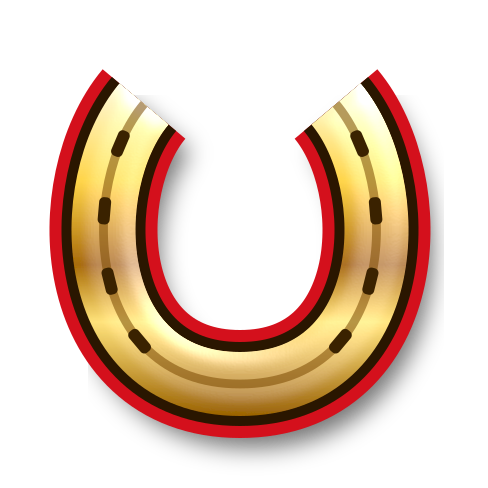
Jarysh ✓Horse games portal